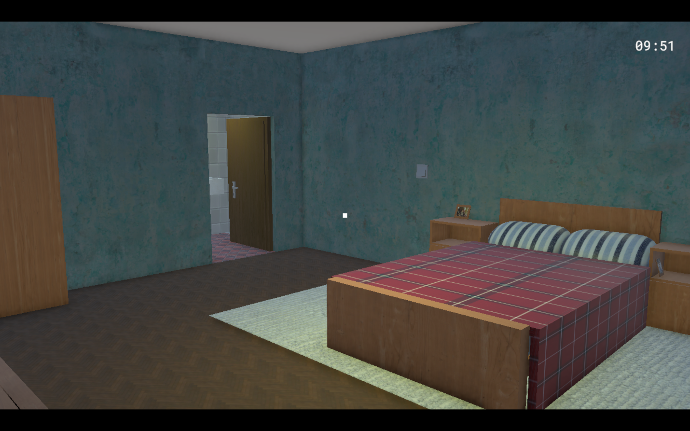
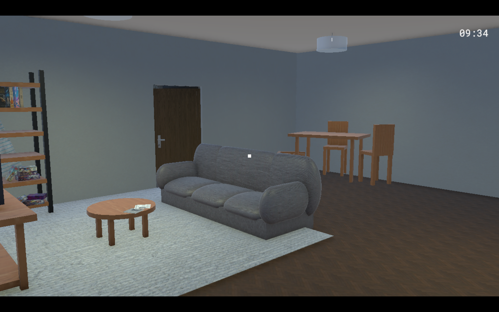
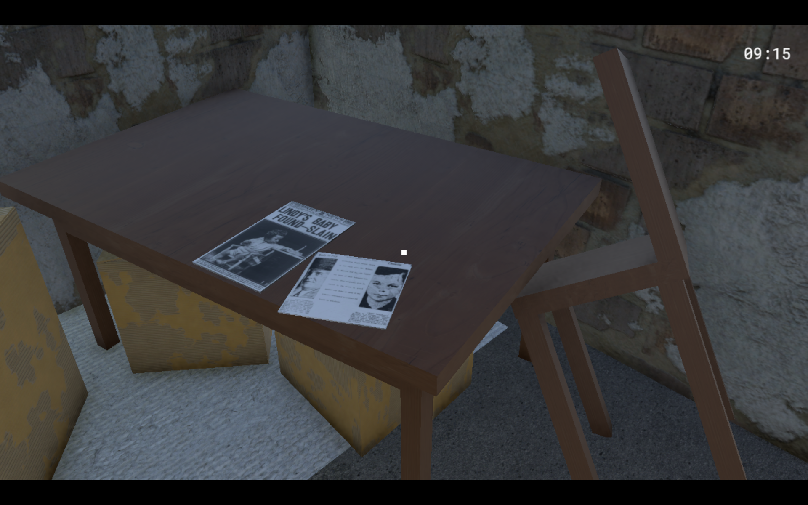

Game Development
Games I've been involved with, mainly through the production of digital art.
GreenGuardians
This is my current and final project for my degree. It will be a narrative 2D game, with a plot around the issue that is greenwashing.


Serra Serrada
Serra Serrada is a short game set in Lousã, following Luna's journey to become the strongest witch. Developed as a learning project for university, it was presented to a representative of Lousã's city council. This project is fully in portuguese. Art partially done by me.


Milky Quest
Someone has been burning Nico's kitchen, but who could it be? Who even burns milk? You can solve this mystery in MilkyQuest, a comedy visual novel developed as learning project for university. Cover art partially done by me.


Childhood Prison
Jack was kidnapped once as a child. Now, as an adult, he starts investigating his kidnapper, only to end up on the same house he was in years ago and needing to escape his childhood prison. Models done by me.


